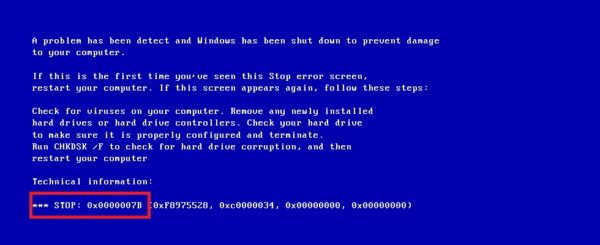

В модернизации ПК возможны и риски:
- Программная и аппаратная несовместимость, например новых и старых модулей памяти или отсутствие
драйверов для компьютерного оборудования под ту или иную операционную систему;
- Субъективное ухудшение новых версий программ для пользователя (например, удаление некоторых
возможностей);
- Возможные новые ошибки (в том числе аппаратные), которые обычно исправляются с выходом патча или
сервиспака;
